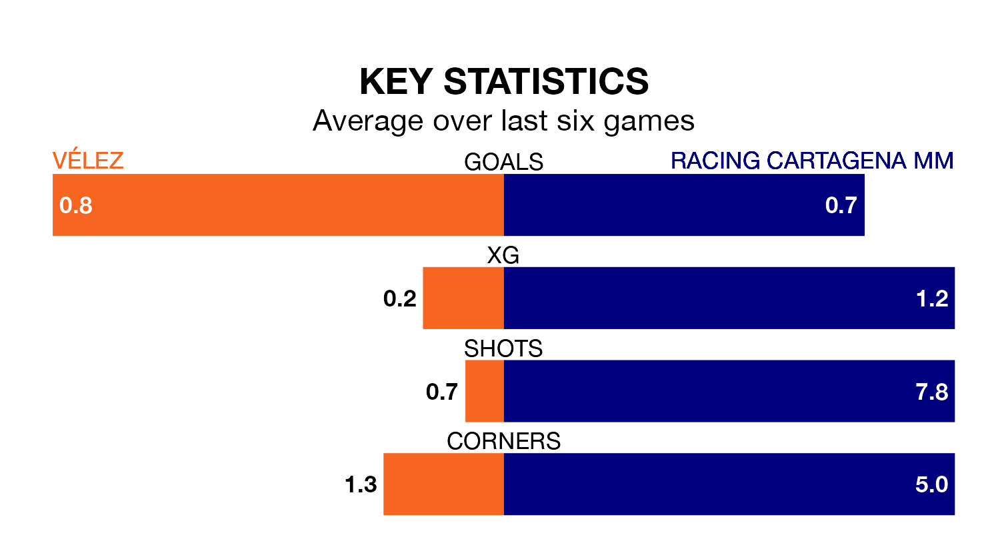

Racing Cartagena MM are strong favourites to take all three points despite Vélez's home advantage in Sunday's early match at the Estadio Vivar Téllez.
*Betting Company* are offering odds of 1.44 on Racing Cartagena MM sealing the win, with the visitors sitting 14th in the Segunda División RFEF Group 4 table.
Vélez, who are 16th in the league and one point behind Racing Cartagena MM, are priced at 6 to win. A draw is set at 3.8.
Vélez are in terrible form in the Segunda División RFEF Group 4, with no wins and two draws from their last six games.
With a win and two draws over that period, Racing Cartagena MM's form is better – they have taken five points from 18, compared to the hosts' two.
With 17 goals in 29 games so far this season, the away team are the league's lowest scorers with 0.6 goals per game. But they are conceding fewer than average too, letting in 24 goals at a rate of 0.8 per game.
Vélez, meanwhile, are average scorers, with 1.0 goal per game. They have conceded 1.5 goals per game.
In the last three years, Vélez and Racing Cartagena MM have played each other on three occasions. They won one each, and they drew once.
Their last meeting was on November 26, when Racing Cartagena MM won 3-0 at home.
Vélez's last match was on Sunday, a 3-1 loss against Linense, with Daniel Cosano Fernández getting the goal for Vélez.
Racing Cartagena MM drew 1-1 with Sevilla B last time out, also on March 31, with José Miguel Bernal Ortiz on the scoresheet.
Updated: 16:41 (UTC), 04/04/24